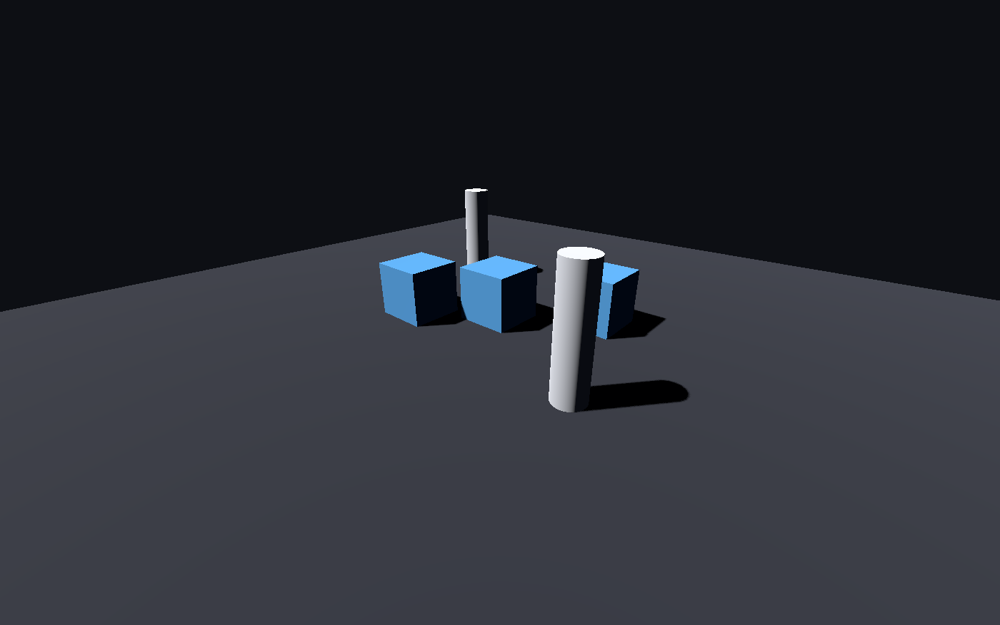
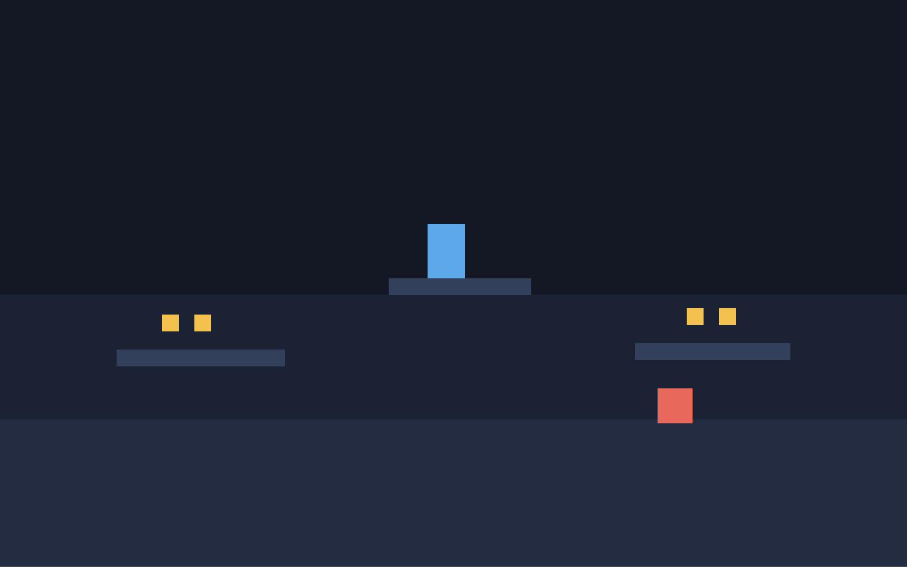

AI agents that can see your Godot game.
An MCP server for Godot 4. Read scenes, edit nodes, write GDScript, run the game, and screenshot what actually happened.
claude mcp add godot-assistant -- npx -y godot-assistant

- Claude Code
- Codex CLI
- Cursor
- Claude Desktop
- Cline
- Windsurf
- Godot 4.3 to 4.7
Most game bugs never reach the console.
A sprite anchored wrong, a menu off-screen, a shader rendering black. None of it throws. An agent limited to logs cannot tell a working scene from a broken one, so it reports success and moves on.
This one renders any scene to a PNG and looks at it. That works with nothing installed but Godot itself.

What it gives the agent
Twenty-five tools, grouped so the model spends its context on your game instead of on tool definitions.
The real engine API, not a remembered one
Godot's API changed hard at 4.0 and keeps moving. Rather than recalling method names, the agent queries the installed engine's ClassDB and gets exact signatures, properties, signals and enums for the version you actually run.
Visual verification
Render any scene offscreen, or capture the running game.
Real scene editing
Batched node edits with typed properties, written the way the editor writes them.
Run and read back
Errors parsed with file and line, duplicates collapsed, engine noise filtered out.
Drive the game
Send actions, keys and clicks, then screenshot the result.
Catch it before running
Parse-check one script or the whole project in a single pass, with file and line for every failure. Far faster than launching the game to discover a typo.
Nothing to set up, until you want more
The engine-side script is passed by absolute path from outside your project, so running a tool never adds files to your repository.
Default
One command. Needs only a Godot binary.
- Read and edit scenes, nodes and resources
- Write and parse-check GDScript
- Query the engine API from ClassDB
- Run the project and read parsed output
- Render any scene to a PNG
With the optional addon
One call to bridge_install adds live control.
- Inspect the running game's live node tree
- Simulate input and watch what changes
- Screenshot the game and the editor
- Open scenes and drive play and stop
- Loopback only, token authenticated, off in exported builds
scene_tree res://scenes/main.tscn uid://bqamain000001 Main (Node2D) Background (ColorRect) Player (CharacterBody2D) instance of res://scenes/player.tscn Coin (Area2D) instance of res://scenes/coin.tscn StartPoint (Marker2D) groups: spawns
A bad write you notice tomorrow is worse than an error today
Editing a scene means load, mutate, repack. Repacking loses things the engine cannot reconstruct, so these cases fail loudly instead of quietly.
Script references are never dropped
If a script fails to compile, the engine loads it as null and the save would silently detach it from your node. That write is refused and the file is left untouched.
Scene UIDs survive
Repacking a scene loses the uid:// in its header, which breaks every other scene referencing it. It is captured before the edit and restored after.
C# scenes are protected
A non-.NET Godot build cannot resolve C# scripts and strips them on save. That is detected up front and refused, with instructions.
No arbitrary code execution
Node types must be bare identifiers present in ClassDB, checked on both sides. A script path passed as a type is rejected, not loaded and run.
Paths cannot escape the project
Everything is normalised, checked for NUL bytes, and resolved through realpath before the containment test, so symlinks cannot step outside.
Read-only mode
Start with --read-only and every mutating tool refuses while inspection keeps working. Useful for code review and for exploring an unfamiliar project.
Twenty-five tools
Tool count is a budget, not a scoreboard. Every definition is billed to the agent's context on every request, so related operations are batched rather than split.
Discovery
- godot_status
- Engine, project and bridge health
- project_info
- Autoloads, input actions, layers
- list_files
- Project files by kind
- search
- Grep scripts, scenes and resources
Scenes and nodes
- scene_tree
- Hierarchy with scripts and instances
- scene_create
- New scene with a stable uid
- node_add
- Batched node creation
- node_modify
- Rename, reparent, delete, group
- node_inspect
- Non-default properties and wiring
- scene_instance
- Place a scene inside another
- signal_connect
- Persisted signal connections
Code and engine
- api_reference
- ClassDB lookup for the installed engine
- script_create
- Write and attach in one step
- script_validate
- Parse-check with file and line
- resource_manage
- Create, read and edit .tres
- import_assets
- Find and fix unimported files
Run and debug
- run_project
- Run the game or one scene
- get_output
- Parsed, deduplicated console
- stop_project
- Stop cleanly
See and drive
- screenshot
- Scene, running game or editor
- simulate_input
- Actions, keys, mouse
- runtime_inspect
- Live tree and real values
Project lifecycle
- editor_control
- Launch, open scenes, play and stop
- bridge_install
- Add or remove the live addon
- export_project
- List presets and build
Questions
What is an MCP server for Godot?
MCP (Model Context Protocol) is the standard way an AI coding agent talks to external tools. A Godot MCP server exposes the engine to the agent, so it can read scene files, edit node trees, write GDScript, run the project and read the console instead of guessing from source text alone.
Do I need to install a Godot addon?
No. Scene editing, scripting, engine API lookup, running the project and rendering a scene to PNG all work with nothing but a Godot binary installed. The optional addon adds live inspection of a running game, input simulation, and screenshots of the game and editor. Without it, those specific tools explain what is missing and everything else is unaffected.
Which Godot versions are supported?
Godot 4.3 through 4.7.1 are covered by the end-to-end test suite, which runs against a real engine rather than mocks. Godot 3.x is not supported, because the engine-side scripts rely on Godot 4 APIs.
Does it work with C# projects?
Yes, with the .NET build of Godot. If a standard build is configured, edits to scenes containing C# scripts are refused rather than performed, because a non-.NET build cannot resolve those scripts and would silently drop the attachments on save.
Is it safe to point at my project?
Paths are confined to the project root with symlinks resolved before the check, node types are validated against the engine's ClassDB so a script path cannot be executed as a type, and saves that would drop a script reference are refused. A read-only mode disables every mutating tool. Running a project does run its scripts, so the usual advice applies: do not point it at a project you would not run yourself.
How much context do the tools cost?
The full set of twenty-five tool definitions is roughly 6,500 tokens. Responses are plain text rather than JSON, properties at their engine defaults are omitted, repeated errors are collapsed with a count, and every list paginates with an explicit offset to resume from.
Point it at your project
Requires Godot 4 and Node.js 18 or newer. Godot is detected automatically on macOS, Windows and Linux.
claude mcp add godot-assistant -- npx -y godot-assistant --project /path/to/game
Using Codex, Cursor or another client? Run npx -y godot-assistant install for a ready-to-paste config.